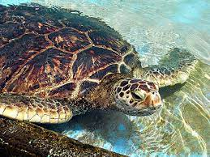

|  | Tortugas marinas |
DESCRIPCIÓN GENERALLas tortugas marinas son un enlace fundamental con los ecosistemas marinos. Ayudan a mantener la salud de los lechos de pastos marinos y los arrecifes coralinos, que benefician a especies con valor comercial, como el camarón, la langosta y el atún. Las tortugas marinas son representantes vivos de un grupo de reptiles que han existido en el Planeta Tierra y han recorrido nuestros mares durante los últimos 100 millones de años. Las tortugas tienen un significado cultural muy importante y un valor turístico considerable. Las tortugas marinas pueden poner más de 150 huevos por nido y pueden anidar varias veces en cada estación, con lo cual compensan las altas tasas de mortalidad que impiden a la mayoría de las tortugas marinas llegar a la madurez. Crecimiento & DesarrolloLos investigadores aún no saben con certeza cuánto tiempo pasan los neonatos en mar abierto, o para dónde van exactamente. La teoría es que pasan sus primeros y más vulnerables años flotando alrededor del mar en camas gigantes de sargazo, donde no hacen más que comer y crecer. Una vez las tortugas alcanzan el tamaño de un plato de comida, aparecen en las zonas de alimentación en zonas cercanas a la costa. Su crecimiento es lento y les toma entre 15 y 50 años alcanzar la madurez sexual, dependiendo de cada especie. No hay manera de determinar la edad de una tortuga marina por su apariencia física. Teóricamente, algunas especies pueden vivir más de 100 años. AlimentaciónLas tortugas marinas son omnívoras y su alimentación depende de yerbas marinas, algas, esponjas, moluscos, crustáceos, peces y corales, que le aportan calcio para fortalecer el caparazón. Algunas tortugas se caracterizan por ser más carnívoras ya que comen en su mayoría pequeños vertebrados, pulpos y medusas. En ocasiones, las tortugas pueden comer en un día la misma cantidad de alimento que su peso corporal.
|
|